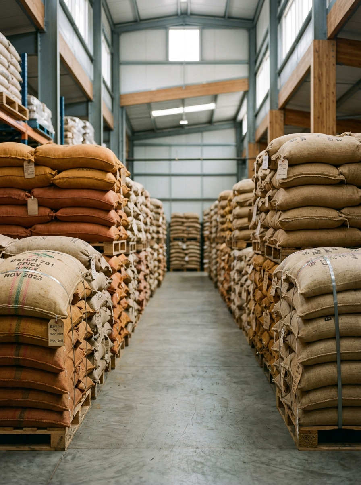

Home / Harvest calendar
Know exactly when each crop is at its best.
Spices are seasonal — and freshness is flavour. This interactive calendar maps the sowing, growth, harvest and processing windows for all three crops, with the specs that matter at each stage.
The Ace7 harvest year.
Each crop runs on its own clock. Tap a coloured cell to see what's happening on the farm that month — and what we test for when it reaches processing. Peak-harvest months are outlined.
Tip: use the arrow / enter keys to step through months when focused. Windows are typical seasonal ranges and shift slightly year to year.
Crop calendars & freshness windows.
Red chilli
Sow Jun–Jul · Grow Aug–Nov · Harvest Dec–Mar (peak Feb–Mar) · Process Feb–Apr.
A Kharif/irrigated crop; red-ripe pods are hand-picked in rounds and arrive at the Guntur yard through late winter.
Coriander
Sow Oct–Nov · Grow Dec–Jan · Harvest Feb–Mar (peak Mar) · Process Mar–Apr.
A rabi/winter crop; the cool season concentrates essential oils before the spring harvest and mandi arrivals.
Turmeric
Plant May–Jul · Grow Aug–Dec · Harvest Jan–Mar (peak Feb–Mar) · Process Feb–Apr.
A long, 8–9 month crop; rhizomes are dug, boiled, dried and polished before curcumin testing.
Buy fresh-season lots, not last year's stock.
Knowing the calendar lets you time orders to the freshest material — and lets us reserve peak-harvest lots for buyers who plan ahead. It also means honest answers: if a crop is between seasons, we'll tell you, and we'll show you the lot's harvest date in its traceability record.
- Plan ahead — reserve peak-season lots before they're gone.
- Verify freshness — every lot code carries its harvest season.
- Smooth supply — we hold properly-stored stock between harvests.
